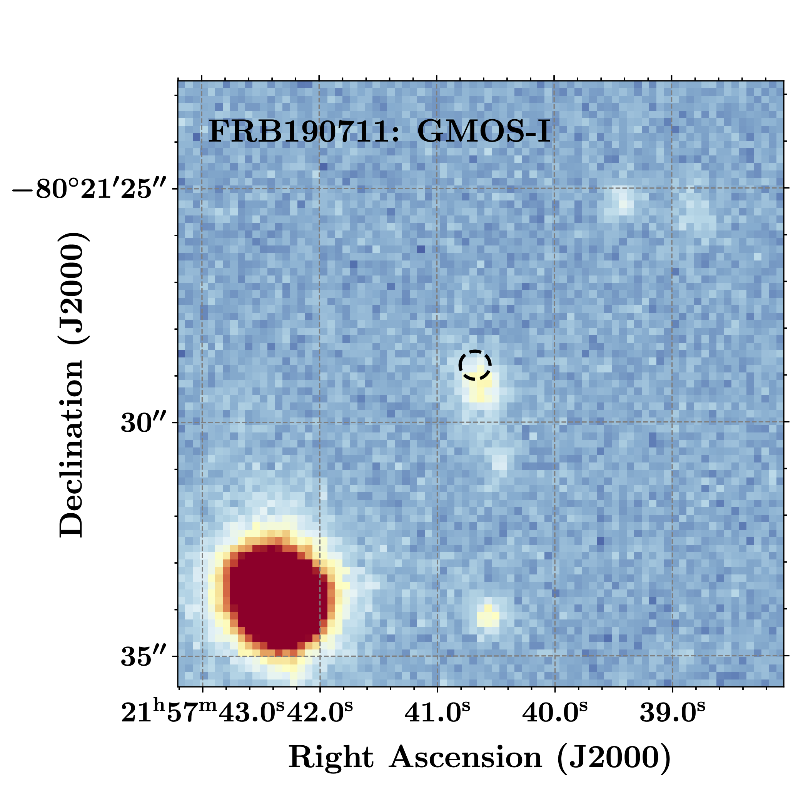

FRB 190711
Image from Heintz et al., 2020 (arXiv: 2009.10747)
Summary
- Detected by: ASKAP-ICS
- FRB coordinates (RA, Dec): 21:57:40.68 -80:21:28.8 (J2000)
- Host coordinates (RA, Dec): 21:57:40.60 -80:21:29.3 (J2000)
- Redshift: 0.5220
- Observed DM: 587.9 pc cm-3
- Repeating: Yes
- References: Macquart et al., 2020, Nature, 581, 391;
Day et al., 2020, MNRAS, 497, 3335;
Kumar et al., 2020 (arXiv: 2009.01214);
Heintz et al., 2020 (arXiv: 2009.10747)
Host galaxy properties
| Quantity | Measured value | Unit |
|---|---|---|
| Stellar mass | (0.81 ± 0.29) × 109 | M⊙ |
| Star-formation rate | 0.42 ± 0.12 | M⊙/yr |
| E(B-V) | 0.19 ± 0.11 | mag |
| Mass-weighted age | 607.2 | Myr |
| Absolute r-band mag. | -19.01 ± 0.08 | mag |
| u - r color (rest-frame) | 0.95 ± 0.16 | mag |
| Half-light radius | 2.94 ± 0.17 | kpc |
| FRB offset from galaxy center | 3.17 ± 2.78 | kpc |
Emission line fluxes
| Emission line | Measured value |
|---|---|
| Hβ | 0.26 ± 0.05 |
Photometry
| Telescope | Filter (eff. wavelength) | Magnitude (AB) |
|---|---|---|
| GMOS-S | g (475 nm) | 23.47 ± 0.20 |
| GMOS-S | r (630 nm) | 23.49 ± 0.15 |
| GMOS-S | i (780 nm) | 22.95 ± 0.15 |
| HST/WFC3 | F160W (1.6 μm) | 22.733 ± 0.012 |